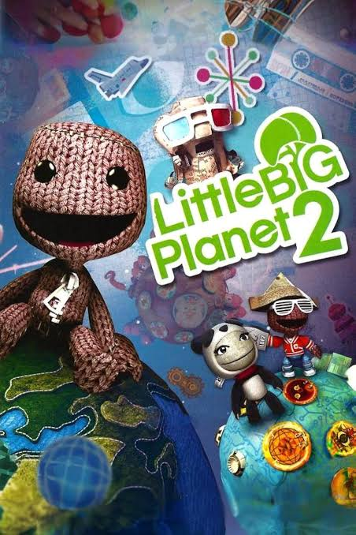

How Sony Old Yeller'd My Favorite Game Series
(Or how I lost a part of my soul as well I guess...)
LittleBigPlanet was a beloved game series on the PS3 that captivated me when I was a wee lad. A generational platforming game series that allowed people to create their own levels and share them for others to play, though I never had the innovation to make my own. The share levels I've seen (the good and bad) gave me so much joy that I didn't even need another game. LittleBigPlanet was one of the games that brought me and my siblings together to have a jolly old time that could never be beat...

And then the Sony nation attacked.
And so a third LittleBigPlanet game released after straight peak for 2 games straight. The third game, that was unfortunately plagued with online issues (basically like, 99% of the reason I played) to the point I had to go back to the second game. But after a certain time of LittleBigPlanet 3 existing, the servers eventually became overran with bots with the servers being further ruined.
And then what did Sony do?
Nothing...
"But they made a new game!" - Yeah we don't talk about that one
They took out the whole online level making and change the whole game and said, "Hey Jimmy. Gimme a LittleBigPlanet with nothin."
- Nuh-thinn!?And uhhhh, thats how they killed my favorite game series. It's a cruel world we live in.